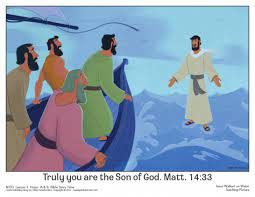

Man Walks on Water
It was reported late yesterday afternoon that a man was seen apparently walking on TOP of a body of water. Eyewitnesses say that the man, who reportedly was wearing a white tunic, brown belt and strap sandals, stepped out of a boat in the middle of the Sea of Galilee and literally started walking with his feet visible. The man's identity is unknown but others heard men shouting to "Jesus" as he stepped out. We will keep you up-to-date on who this man is, as well as where he obtained such power. Reported by Ima Christian.
